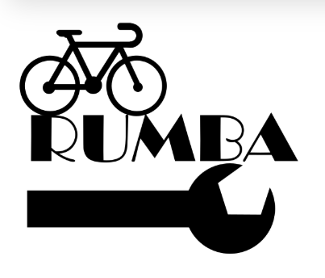
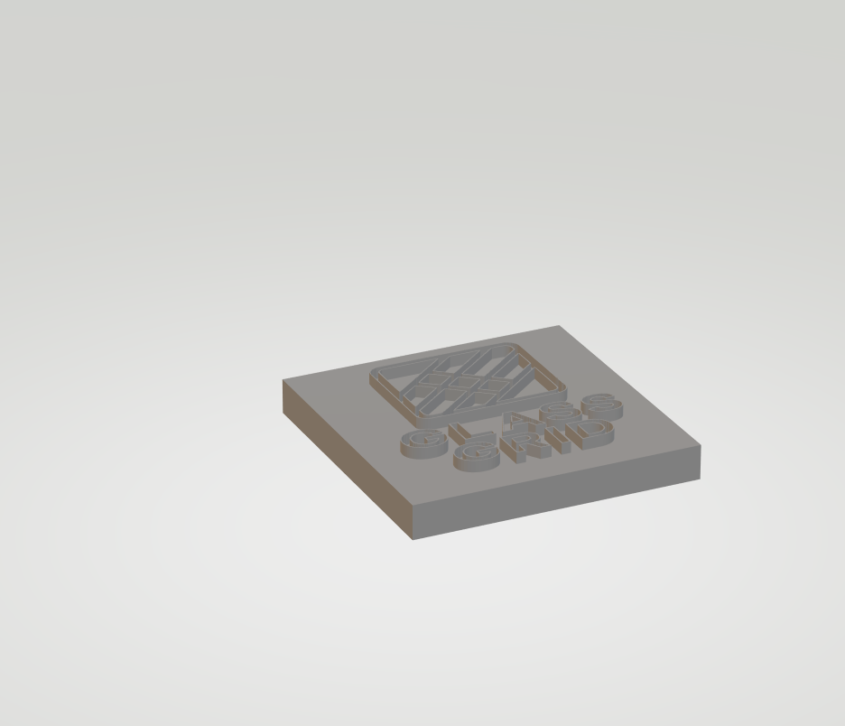

Mans datorikas portfolio
Šajā mājaslapā es vienkārši parādu dažus darbus, ko esmu taisījis datorikā. Te ir teksta apstrāde, attēlu apstrāde, 3D modelēšana, video un izklājlapas.
Teksta apstrāde
Teksta apstrādē es mācījos rakstīt un noformēt tekstu. Es mācījos veidot virsrakstus, sarakstus, vienkāršas tabulas un sakārtot informāciju tā, lai to būtu viegli lasīt. Man patika, ka tekstu var padarīt daudz saprotamāku, ja viss ir sakārtots.
- virsraksti un rindkopas
- saraksti
- teksta izlīdzināšana
- vienkārša noformēšana
Attēlu apstrāde - rastra grafika
Šeit ir mana gif animācija.
Attēlu apstrāde - vektorgrafika
Šeit ir mans vienkāršais logo.

3D modelēšana
Šeit ir mans 3D kuba darbs.

Video
Šeit ir vienkāršs reklāmas video suvenīram.
Izklājlapas
Te ir saite uz lejupielādējamu xlsx failu ar vienkāršiem aprēķiniem: Lejupielādēt xlsx failu